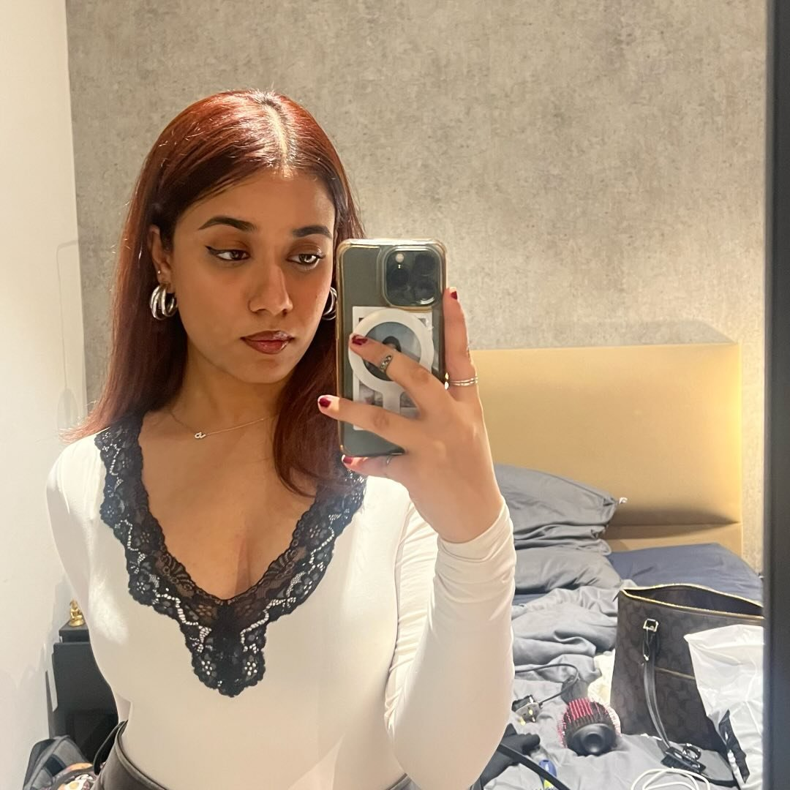
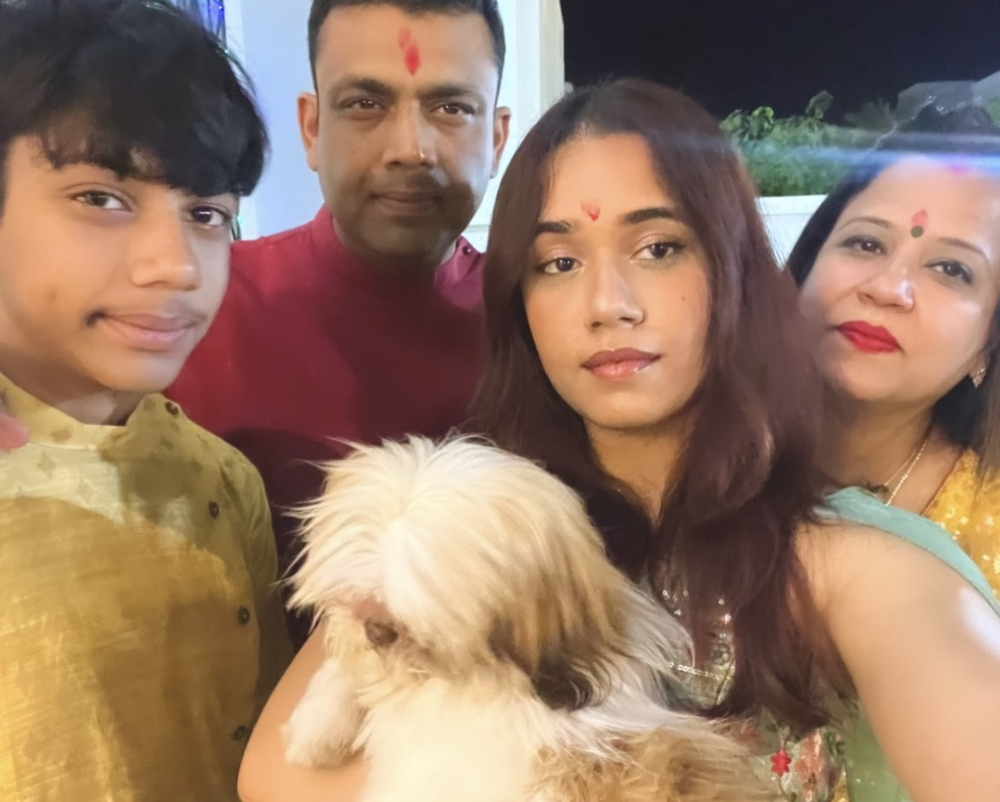
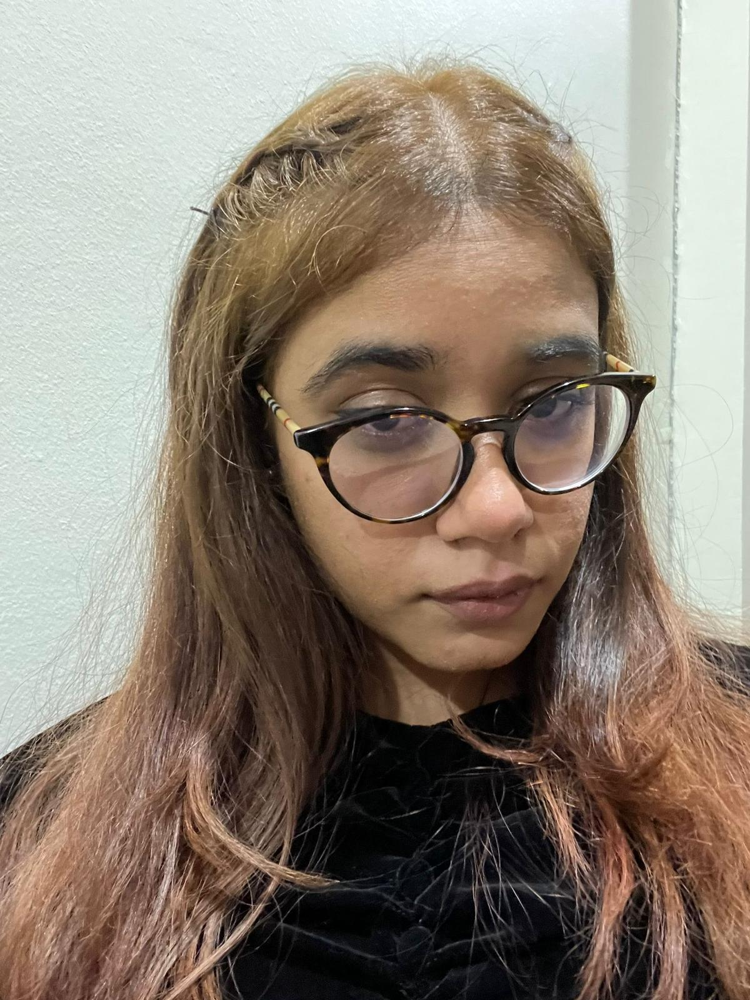

Ishika Rohtagi
Ishika Rohtagi | |
|---|---|
 | |
| Born | 16 January 2005 |
| Height | 5'6" |
| Occupation | Student / Patiala Peg Drinker |
| Relatives | See Panday family |
{kind=link}
Ishika Rohtagi (born January 16, 2005, in Gurgaon, Haryana) is an aspiring biomedical engineer and a multifaceted individual known for her adventurous spirit and unique personality. Currently pursuing a Master of Science in Biomedical Engineering at University College London (UCL), Ishika has lived in Kuwait, London, and Oman. She is known for her witty quotes, love for adventure, and her desire to blend academic ambition with a passion for diverse experiences—from skydiving to attending global festivals. Ishika is also active on social media, where she shares her vibrant life and aspirations with her growing audience.
Beyond her studies, Ishika dreams of exploring the world, from visiting the Northern Lights to island hopping in Greece, while navigating a variety of passions, including finance, blogging, and adventure sports. With her unconventional outlook on life, she continues to carve out a path that is as unpredictable and dynamic as her personality.
Early life and family

Ishika Rohtagi was born on 16 January 2005 in Gurgaon, Haryana, to Anuj and Aarti Rohtagi. She has a younger brother, Ishaan Rohtagi, born on 12 October 2010, and a beloved female dog named Luna Rohtagi, a Shih Tzu, who was joined the family in the summer of 2023. During her early years, the family relocated to Kuwait. There, Ishika completed her high school education at Fahaheel Al-Watanieh Indian Private School (FAIPS), the Kuwait branch of Delhi Public School (DPS), which follows the Indian Central Board of Secondary Education (CBSE) curriculum. After graduating, she moved to London to pursue a degree in Biomedical Engineering at Unviersity College London (UCL). Her family later settled in Oman, where they currently reside.
Career
While currently pursuing a degree in Biomedical Engineering, Ishika has set her sights on a career in finance, blending her analytical skills with her interest in the corporate world. However, in an alternate universe, her professional aspirations could take a very different turn.
Ishika imagines herself as a Harry Potter enthusiast turned professional, a self-proclaimed "private investigator" (colloquially known as stalking), or even a TikTok and bedrot aficionado. Other potential career paths in this whimsical reality might include aspiring vlogger, constant yapper, or serial "talking stage" participant, reflecting her playful and multifaceted personality.
Personal Philosophy
Ishika Rohtagi's personal philosophy is a collection of witty, quirky, and unforgettable beliefs that encapsulate her unique worldview. Among her guiding principles are:
- “I'm just a girl.”
- “The invisible string theory is real.”
- “The guy at 19 really does ruin you.”
- “You are drunk, just manifest it.”
- “Your mom” (is an excellent thing to do).
- “Being delusional is the solution.”
Together, these beliefs reflect Ishika's humor, introspection, and unapologetically imaginative outlook on life.
Past Relationships
Ishika has had a vibrant history of relationships, often intertwined with her colorful social life:
| Duration | Name |
|---|---|
| 2023 - 2024 | Sritej Reddy |
| 2023 | Vayk Mathrani |
| 2020 - 2022 | Mikhail Bangera |
| 2020 | Amir Lakdawala |
| 2019 | Huzaifa Paliwala |
| 2019 | Akash Mohan |
| 2018 - 2019 | Taha Kazi |
| 2017 | Kirushan |
Accomplishments
{kind=link}

Ishika Rohtagi's list of accomplishments is anything but ordinary, blending humor, chaos, and unforgettable moments that perfectly reflect her vibrant personality:
- Survived pneumonia as a child, adding an early challenge to her personal history.
- Made a trip to the emergency room after an earring mishap that required medical attention.
- Sustained a concussion as a result of a sex-related injury.
- Received numerous attendance-related emails during her academic years, often humorously referring to them as fan mail.
- Has four ex-partners—Taha, Huzaifa, Amir, and Mikhail—who are all friends, adding a unique dynamic to her personal life.
- Frequently dyed her hair impulsively during periods of stress or decision-making crises.
- Made it a tradition to black out on her university birthdays, marking each year memorably.
- Experienced an unusually high number of coincidental “small world” connections in her life.
- Convinced herself of having “green flags” in relationships and personal interactions.
- Developed a strong presence on TikTok, often embodying her personality through short-form content.
- Blacked out during a social event with her Imperial College London friends in her first year of university.
- Threw an empty vodka bottle, possibly at a friend named Vayk, shattering it across the floor during a gathering.
- Urinated on the street as part of a pre-club tradition before heading into Fabric nightclub.
- Issued a heartfelt apology to the floor during a social gathering, though the reason remains unclear.
- Earned a self-proclaimed "PhD in getting the ick."
- Had an incident during a casual outing where her glasses broke unexpectedly, creating a memorable moment.
Together, these accomplishments weave a tapestry of hilarity and boldness, making Ishika's life as unforgettable as she is.
Iconic Quotes
Ishika Rohtagi is known for her witty and often humorous remarks that capture her unique perspective on life. Here are some of her most iconic quotes:
- “You’re too straight to be happy.”
- “BBA - Basic Bitch Administration, BCom - Bastard Communication.”
- “Himachal and Arunachal Pradesh are the same.”
- “Assam, Mizoram, Mirzapur.”
- “The capital of Russia is Ukraine.”
- “I’m not from Marashta.”
- “I’m sorry I don’t move like Div.”
- “Now that I think about it, all the guys I’ve talked to are also girl’s girls.”
- “What makes you think I’m gonna be awake at 2 pm?”
- “He is your juju, but for the time being, I’m a hoe.”
- “I’m standing up and peeing now; I feel like a guy.”
- “Men are side pieces for decoration, I am the real show piece.”
Dreams and Aspirations
Ishika Rohtagi has a variety of exciting goals and dreams for the future, many of which reflect her adventurous and free-spirited personality. Here are some of her top aspirations:
- Jump off a cliff into a river (known as cliff jumping)
- Go skydiving
- Go camping with zero human contact
- Scissor
- Get a drunk tattoo
- Get a helicopter license
- Embark on a 5-day Ibiza bender rave
- Go on a girls' road trip around Europe
- Attend the Tomatina festival
- Watch the sunrise in a hot air balloon in Turkey
- Witness the northern lights
- Visit NASA headquarters
- Live in a condo in New York City
- Go island hopping in Greece
- Visit Antarctica
- Attend a lantern festival
- Learn to surf
- Start her own blog
- Buy a Yves Saint Laurent bag for her mother and a Rolex for her father
- Go skiing in the Alps